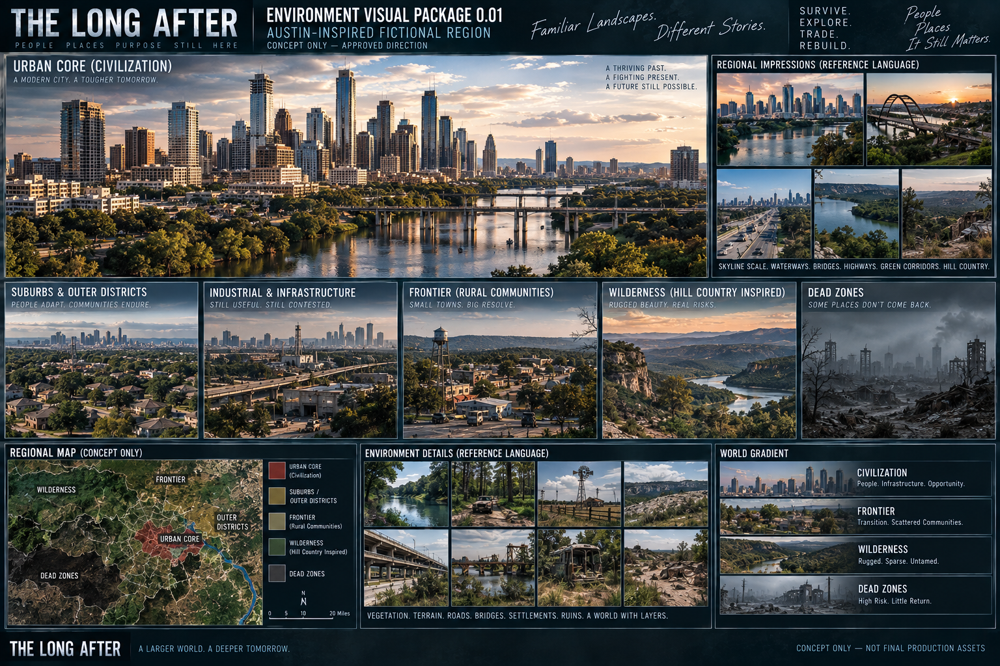

Civilization
The most structured end of the world gradient: settlements, infrastructure and surviving order.
The setting is an original fictional region inspired by Central Texas rather than a one-to-one recreation of Austin or any real city.

The most structured end of the world gradient: settlements, infrastructure and surviving order.
The transition where reliable systems thin out and travel becomes more exposed.
Terrain, vegetation and distance increasingly dominate the experience.
The most dangerous end of the gradient. Public details remain intentionally limited.